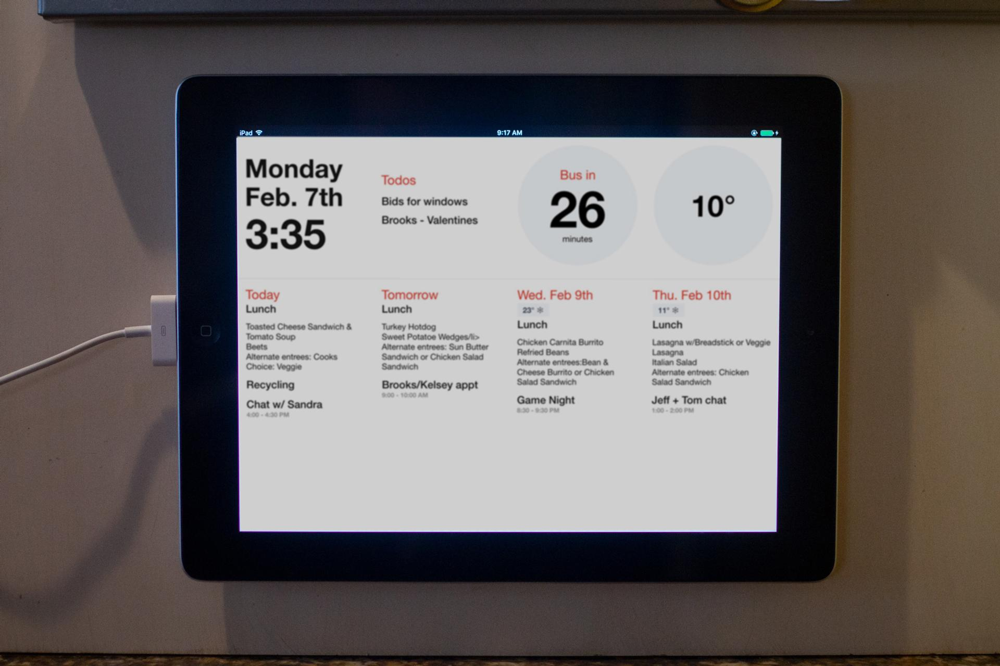
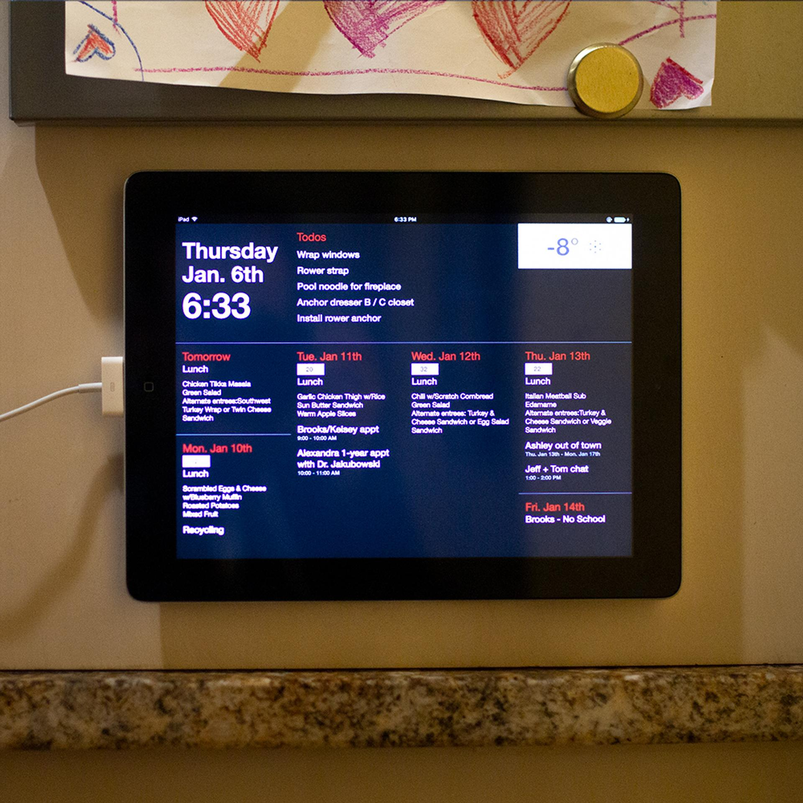
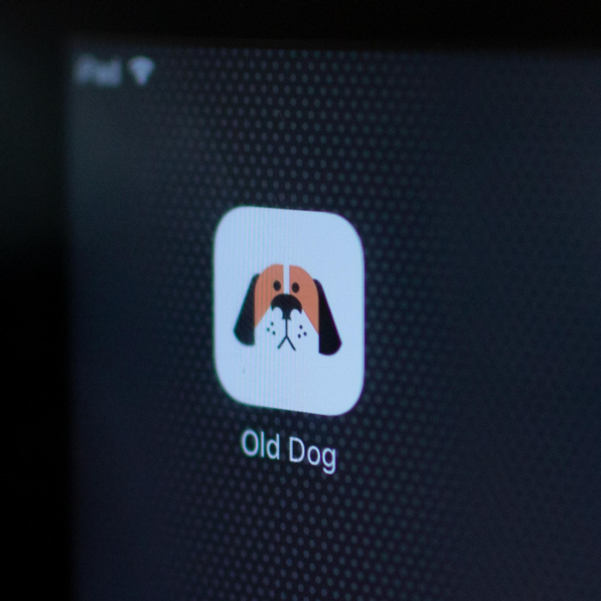

Old Dog

There needs to be a second life for your old tablets & phones.
Old Dog aggregates four personal calendars, three school calendars and weather data, and displays the amalgam for the the upcoming week on a decade-old iPad.
The frontend is heavily-transpiled React (to play nice on iOS9). It uses Flex for layout (grid isn't available on iOS9) and implements its own light/dark mode using the sunrise/sunset data from Open Weather Map.
The API powering the calendar combines data from Google Calendar, Open Weather Map & Todoist into a single data feed.

Dark Mode
Icon